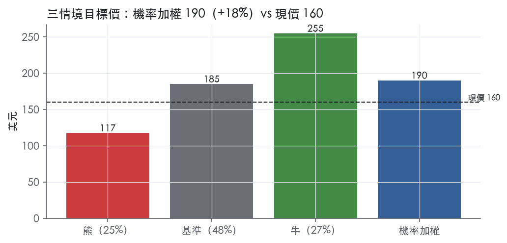
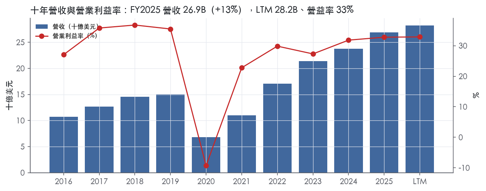
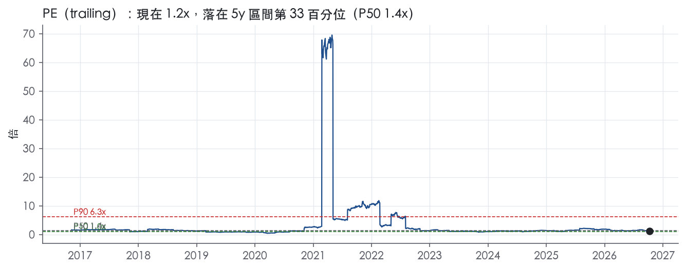
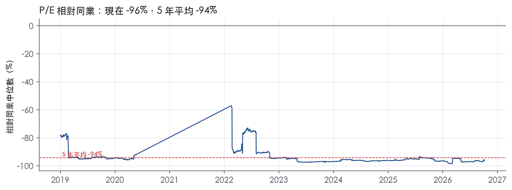
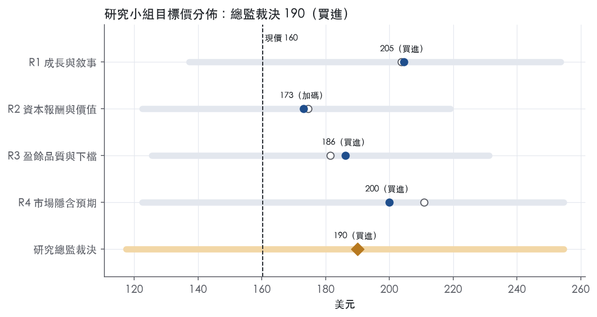
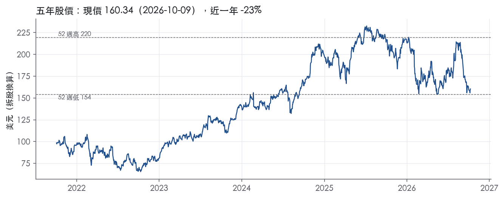

評等總表 › 非必需消費 › BKNG
倍數持平、盈餘推動的看多｜評等 買進｜目標價 190
| 報告日 | 評等 | 目標價 | 當時股價 | 超額報酬 |
|---|---|---|---|---|
| 2026-10-09 | 買進 | 190 | 160 | +21.3% |
| 評等 | 買進 |
| 12 個月目標價 | 190 美元 |
| 現價 | 160.34 美元（2026-10-09） |
| 預期報酬 | 股價 +18.5%＋股息 13.1%＝總報酬 +31.5%；同業籃門檻 10.2%，超額 +21.3% |
| 估值方法 | P/E 16.2x，套在第 5–8 季的EPS（也就是一年後的未來四季） |
| 三情境 | 熊 117／基準 185／牛 255 |
| 研究流程 | 四位研究員兩輪辯論＋研究總監裁決 |
| 資料來源 | SEC EDGAR XBRL、Tiingo、FRED（全免費） |
倍數持平、盈餘推動的看多（研究總監裁決，四位研究員兩輪辯論後）
評等 買進｜12 個月目標價 190 美元（總監三情境機率加權 187 與研究員中位數 193 各半）｜現價 160.34（2026-10-09）
預期報酬：股價 +18.5%＋股息 13.1%＝總報酬 +31.5%。同業籃門檻 10.2%，超額 +21.3%。
估值方法：P/E 16.2x，套在第 5–8 季的EPS（也就是一年後的未來四季）。三情境：熊 117（25%）／基準 185（48%）／牛 255（27%）。
什麼會讓研究總監改變看法：FY2026Q3 營收年增低於 6% 或營益率年減逾 2pp，轉中性、熊機率升至 0.40 並改採熊路徑為基準；若公司揭露直接流量占比下降或荷蘭創新盒出現縮減時程，熊機率與基準稅率同步上調。
| 過去四季（實際，FY2026Q2） | 未來四季 | 第 5–8 季 | 第 9–12 季 | |
|---|---|---|---|---|
| 營收（B） | 28.2B | 30.9B | 33.6B | 35.7B |
| 營收成長 | 12.9% | 9.5% | 8.5% | 6.5% |
| 營業利益率 | 32.9% | 33.3% | 33.8% | 33.8% |
| EPS（美元） | 132.05 | 9.84 | 11.41 | 12.74 |
| EPS 成長 | 23.2% | -92.5% | 16.0% | 11.7% |
| 每股股息（美元） | 9.64 | 9.64 | 9.64 | 9.64 |
| P/E（現價） | 1.2x | 16.3x | 14.1x | 12.6x |
| 股息殖利率（現價） | 13.1% | 6.0% | 6.0% | 6.0% |
過去四季為申報數字；預測為研究總監的假設、程式計算。倍數與殖利率都用現價計算，用來看現價對應各期獲利的高低。
| 情境 | 機率（歷史） | 故事 | 未來四季營收成長 | 第 5–8 季營益率 | 倍數 | 目標價 | 股價漲跌 |
|---|---|---|---|---|---|---|---|
| 熊 | 25%（20%） | AI 代理分流與 DMA parity 承諾壓行銷效率與佣金，舉債回購減速、倍數跌至 13x；對應風險表第 2、1 條，第 3 條宏觀為放大器；觸發 FY2026Q3 營收年增 <6% 或營益率年減 >2pp | 4.0% | 31.0% | 13.0x | 117 | -26.7% |
| 基準 | 48%（52%） | 市場前瞻倍數持平，報酬來自 Q5–Q8 EPS 成長（營收 9.5% 轉 8.5%、營益率 32.9% 升至 33.8%）與年減 4% 的股數 | 9.5% | 33.8% | 16.2x | 185 | 15.3% |
| 牛 | 27%（28%） | FY2026Q3 年增回到 9% 以上證實時點說，Connected Trip 變現帶動類股向 EXPE 五年中位數 25x 回升一半 | 12.0% | 35.0% | 20.0x | 255 | 58.8% |
目標價由程式依研究總監的驅動與倍數計算；機率由研究總監給定。括號內是歷史頻率：把這檔股票過去十年 12 個月報酬的波動形狀，置中在基準情境，結果落在各情境附近的比例。

四位研究員用不同方法各自估值，回應研究總監的質疑後交出第二輪，最後由總監逐點裁決。各研究員的主張見第七章，裁決理由見第八章，完整論證見《研究底稿》。
| 立場（一輪→二輪） | 加權目標價（一輪→二輪） | 評等（一輪→二輪） | 第二輪倍數 | 熊～牛目標價 | |
|---|---|---|---|---|---|
| R1 成長與敘事 | 看多→看多 | 204→205 | 買進→買進 | 13.5x | 137～254 |
| R2 資本報酬與價值 | 中性→中性 | 174→173 | 加碼→加碼 | 17.1x | 122～219 |
| R3 盈餘品質與下檔 | 中性→看多 | 181→186 | 買進→買進 | 12.8x | 126～231 |
| R4 市場隱含預期 | 看多→看多 | 211→200 | 買進→買進 | 17.0x | 122～255 |
| 研究總監裁決 | 看多 | 190 | 買進 | 16.2x | 117～255 |
目標價由程式依各自的驅動與倍數計算；評等＝機率加權總報酬 − 同業籃門檻。
Booking Holdings 是全球最大的線上旅遊預訂集團之一，透過 Booking.com、Priceline、Agoda、KAYAK、OpenTable 五個消費者品牌，連結旅客與住宿、機票、租車、景點活動及餐廳供應商¹。公司營收絕大部分來自線上旅遊預訂服務，另外還有支付撮合、廣告、餐廳預訂管理及旅遊保險等收入¹。FY2025 全年營收 26.92B 美元，年增 13.4%。公司的客戶一邊是全球旅客，另一邊是飯店、航空、租車及餐廳等旅遊服務供應商，本質上是雙邊平台商業模式。
公司不以傳統「事業部」切分財報，而是用品牌與收入性質（merchant／agency／advertising and other）揭露營收結構，10-K 未揭露各品牌各自的營收占比¹。Merchant 收入來自公司代收旅客款項的交易，主要是 Booking.com 的住宿預訂佣金與交易淨收入，是收入中的大宗¹。Agency 收入幾乎全部來自 Booking.com 住宿預訂的佣金，公司不經手款項撮合¹。廣告及其他收入主要來自 KAYAK 的導流與廣告版位、OpenTable 的餐廳預訂服務與訂閱費，以及其他品牌的廣告收入¹。
產品線上，Booking.com 是全球住宿預訂房晚數的龍頭，截至 2025 年底提供約 440 萬個房源，涵蓋超過 220 個國家地區與 40 種語言，包含約 50 萬家飯店、旅館與度假村，以及約 390 萬個公寓、民宿等非傳統住宿¹。2025 年 Booking.com 在超過 55 個市場提供機票服務，並涵蓋景點門票、租車與地面交通¹。Priceline 聚焦北美折扣旅遊預訂，Agoda 聚焦亞太市場的住宿、機票與地面交通，KAYAK 是跨平台比價的元搜尋服務，覆蓋超過 60 個國家地區，OpenTable 則是美國為主的餐廳預訂與餐廳管理服務品牌¹。從收入結構看，Booking.com 的住宿佣金撐起公司絕大部分營收，是集團的核心現金牛，其他品牌更多扮演流量導入與補強服務線的角色。
地理上公司以歐洲為核心（Booking.com 總部位於荷蘭），亞太由 Agoda（總部新加坡）主導，北美則由 Priceline、KAYAK、OpenTable（總部均在美國）負責¹。截至 2025 年底公司約有 24,300 名員工，其中約 2,900 人在美國、約 21,400 人在美國以外，顯示公司營運重心和人力配置都偏向海外市場¹。通路上，公司依賴自有品牌網站與 App 的直接預訂，同時透過 KAYAK 等元搜尋導流、以及與旅遊服務供應商建立供給端合作來獲客¹。公司策略上特別點名要加強亞洲與美國這兩個關鍵地理市場的品牌知名度與本地化，顯示這兩個區域是未來增長的重點戰場¹。整體而言，公司客戶結構是「全球旅客 + 全球供應商」的雙邊網絡，地理集中度不像單一區域电商平台那樣高，這也分散了單一市場景氣風險。
FY2025Q3 營收 9.01B 美元，年增 12.7%，營益率 38.7%，為全年最旺季度，淨利 2.75B 美元、EPS 84.41（is/dv 資料包 FY2025Q3）。FY2025Q4 營收 6.35B 美元，年增 16.0%，但因屬傳統淡季營益率回落至 32.0%，淨利 1.43B 美元、EPS 43.75（資料包 FY2025Q4）。FY2026Q1 營收 5.53B 美元，年增 16.2%，為全年最淡季度，營益率壓縮至 23.0%，淨利仍達 1.08B 美元（資料包 FY2026Q1）。FY2026Q2 營收 7.35B 美元，年增 8.1%放緩，但營益率回升至 34.0%，淨利 1.95B 美元、EPS 2.53，為近四季最高單季獲利（資料包 FY2026Q2）。整體觀察近四季營收年增率從 16% 以上逐步收斂到 8.1%，顯示成長動能邊際放緩，但利潤率仍維持在 23%–39% 區間波動，與公司揭露的旺季（Q3）／淡季（Q1）季節性模式一致。資料包未提供可用的次季財測指引原文，10-K 與可取得資料均未揭露管理層對下一季的具體財測數字。
公司的核心戰略敘事是「Connected Trip」——打造從 AI 驅動的行程規劃、預訂、支付到旅途中建議的一站式無縫體驗，並以 Genius 忠誠度計畫跨垂直擴展作為黏著度引擎¹。2025 年公司機票票量年增 37%、景點門票票量在低基數上年增約 80%，被列為 Connected Trip 垂直成長的具體成果¹。公司持續投資生成式 AI 功能（消費者端的行程規劃助手、AI 查詢助理、比價工具；供應端的 Smart Messenger、Auto-Reply），作為提升消費者與合作夥伴體驗及內部效率的槓桿¹。公司也點名擴大另類住宿（alternative accommodations）供給、增加支付平台採用率、強化亞洲與美國市場品牌知名度與本地化，以及推動「Transformation Program」以創造效率並釋出資金用於長期戰略再投資¹。公司並表示會持續評估潛在併購、合夥與投資機會，作為多品牌協同戰略的延伸¹。
就我方判斷，Booking 的成長故事已從單純的線上滲透率提升轉向「既有旅客的客單價與黏著度提升」——Connected Trip、支付與忠誠度計畫本質上都是在既有流量基礎上做加值變現，而非單純搶占新用戶。Q1/Q4 的淡季利潤率壓縮與 Q3 的旺季放大效應，意味著公司的毛利率結構高度依賴旅遊旺季的規模經濟，任何宏觀對歐美消費支出的衝擊都會不對稱地打擊 Q1 財報。從 trailing 倍數來看 EV/EBITDA、EV/Sales、P/FCF 均落在近五年 80% 分位以上的相對高位，意味著市場已為成長放緩後的利潤率韌性支付溢價，後續催化劑將集中在 Connected Trip 變現能力與美國／亞洲市占率擴張的驗證上。

Booking 的護城河評為寬，主要來源是 Booking.com 住宿供需兩端的網路效應加上品牌，我們有把握其 ROIC 在未來 10 年以上仍高於資本成本。趨勢評為變窄，因為管理層在 10-K 中寫明 Gen AI 正在壓低競爭產品的推出成本，而大型科技公司握有更多消費者與資料，這兩股力量直接衝擊 Booking 的流量入口。財務數字目前還看不到侵蝕，「變窄」是我們對未來的前瞻判斷，不是已經發生的事實。
網路效應是第一來源，也是最難複製的部分。截至 2025 年底，Booking.com 提供約 4.4 million 個房源，涵蓋超過 220 個國家地區、超過 40 種語言，其中約 3.9 million 個是公寓、民宿等非傳統住宿¹。公司表示，合作夥伴能藉此把房源賣到原本因語言或支付限制而接觸不到的市場與消費者¹。長尾房東自己沒有能力做跨語言、跨幣別的獲客，所以供給越分散，平台對供給端的不可替代性越高；旅客端則因選擇最多而留下，形成雙邊正循環。
無形資產（品牌）是第二來源。以房晚數計，Booking.com 是全球住宿線上預訂的第一品牌¹。公司透過品牌行銷與績效行銷建立了廣為人知的電商品牌，並持續投資維持品牌認知¹。品牌的實質價值在於降低對付費流量的依賴，但它需要持續的行銷支出來維護，屬於「要花錢守」的護城河。
轉換成本與成本優勢不列入。Genius 忠誠計畫與支付平台目前在 10-K 中只是策略方向，沒有留存率或費率數據可以證明已形成鎖定效果。
利潤率數字支持寬護城河，但 ROIC 從 FY2023 起失真，不能拿來檢驗。
最大威脅是 AI 代理與大型科技公司搶走「旅程規劃的起點」，其次是歐盟監管。
目標 EV/EBITDA 相對同業應給溢價，理由是寬護城河、FY2025 營益率 32.8%，以及極輕的資本支出（資料包年度表）。但因為趨勢變窄，超額報酬的衰退期不應假設永續，溢價幅度應低於護城河「穩定」時的水準。另外提醒：資料包中的每股相關數據基準錯亂（P/E 1.2x、股息率 13.1%、EV/EBITDA 5 年中位數 0.8x，季度 EPS 從 FY2025Q1 的 0.40 跳到 FY2025Q3 的 84.41），不能用來定錨歷史分位；請先核對市值 123.46B 與股價、股數基準是否一致，再使用現值 EV/EBITDA 12.8x 與同業比較。
| 指標 | 最新 | 十年平均 | 標準差 | 最低 | 最高 |
|---|---|---|---|---|---|
| ROIC | -182.9% | 39.3% | 213.9% | -252.4% | 560.9% |
| 營業利益率 | 32.8% | 27.0% | 12.8% | -9.3% | 36.8% |
| FCF 利潤率 | 33.8% | 28.9% | 11.2% | -3.0% | 36.2% |
| ROE | -112.6% | 2500.6% | 7097.3% | -173.9% | 22573.7% |
程式計算。資本成本代理值（10 年債＋5%）：10.2%；ROIC 平均減資本成本：29.1%；ROIC 有資料的 9 年中，高於資本成本 6 年。
現金流完全跟得上、甚至超過報表淨利。LTM 營業現金流／淨利 1.37x，近三年平均 1.62x，十年平均 1.71x，三個時間窗口全部是綠燈。自由現金流／淨利同樣全綠：LTM 1.32x、近三年 1.55x、十年平均 1.12x。應計比率（(淨利−CFO)／平均總資產）在 LTM、近三年、十年平均分別是 -9.2%、-11.9%、-8.1%，全部為負值，代表盈餘不是靠應計項目堆出來的，現金流甚至比會計淨利更強。唯一的例外是 FY2020：當年營業現金流僅 0.09B、自由現金流轉為 -0.20B（資料包年度表），但這是疫情期間旅遊業全面停擺造成的現金收縮，不是跨期常態，詳見下方紅旗說明。整體看，這家公司的「輕資產、預收現金」商業模式（merchant 模式先收款、資本支出低）讓現金轉換體質天生優於同業，FY2025 資本支出僅占營收 1.2%（資料包年度表）。
本次資料包沒有取得最新財報新聞稿，因此無法逐項列出公司自訂的非 GAAP 調整金額（SBC、攤銷、重組費用等的具體數字）。10-K 揭露 FY2025 因年度商譽減損測試認列了商譽與無形資產減損費用，但原文未附金額²。這類減損屬非現金項目，若公司在非 GAAP 數字中加回，會放大 GAAP 與調整後盈餘的缺口，但由於缺乏新聞稿對照，無法驗證加回金額是否合理。10-K 另提到公司執行「Transformation Program」，包含裁員、流程現代化、採購優化與不動產節省，相關費用會壓低認列當期的 GAAP 利潤²；這類重組費用多數屬於一次性，但若轉型計畫連續多年發生，就該被視為經常性營運成本，不宜全額加回。SBC／營收在本計分表中「不加回」處理，LTM 2.1%、近三年 2.4%、十年平均 2.5%，三個區間都低於 3% 綠燈門檻，代表即使不給股權薪酬任何優惠扣除，對盈餘的侵蝕也相對溫和。缺少新聞稿是本章最大的資訊缺口，建議估值研究員之後補抓最新季度新聞稿的非 GAAP 調節表再覆核一次。
槓桿極低、付息能力強，資本配置以大量回饋股東為主。淨負債／EBITDA：LTM 0.30x、近三年平均 0.15x、十年平均 -0.38x（十年平均為負代表現金大於債務的年份更多），三者皆為綠燈。利息保障倍數（營業利益／利息）LTM 8.42x、近三年 5.93x、十年平均 10.8x，同樣全綠，顯示即便近三年受疫情後利率上升影響略降，仍遠高於 3.00x 的紅燈門檻。股數稀釋方面，稀釋股數年變動 LTM -3.0%、近三年 -6.6%、十年平均 -4.6%，負值代表公司持續淨減少股數，回購力度大。股東回饋（股利＋回購）／淨利 LTM 163.8%、近三年 171.6%、十年平均 339.7%，數字遠超過 100%，表示公司回饋股東的金額長期大於當期淨利，但對照淨負債／EBITDA 仍低於 0.5x，可判斷這不是靠舉債在撐回購，而是靠 FCF／淨利 長期 >1 的現金優勢去支撐。整體資產負債表幾乎無槓桿壓力，資本配置偏向股東友善但財務穩健。
程式只標出一條紅旗：淨利率 FY2019→FY2020 跳動 -31 個百分點。這是真實事件，但屬於一次性外部衝擊，不是盈餘品質或會計口徑問題。FY2019 全年淨利率仍維持兩位數正值（淨利 4.87B／營收 15.07B，資料包年度表），FY2020 營收驟降至 6.80B、年增 -54.9%，營業利益轉為 -9.3% 營益率（資料包年度表），淨利僅剩 0.06B（資料包年度表），與同年全球旅遊業因疫情全面停擺一致。10-K 風險因子章節明確列出「其他超出我們控制範圍的事件，例如疫情、恐怖攻擊、自然災害……可能導致需求下降或旅行限制」作為公司長期揭露的系統性風險²，說明公司本身也將此類宏觀外部事件視為營運風險的一部分，而非個案財報舞弊或口徑調整。因此這條紅旗判定為「一次性、已解釋」，不影響對當前（FY2024–FY2025）盈餘品質的判斷。計分表上其餘七項指標全部是綠燈，沒有其他未解釋的紅旗需要回應。
估值可以直接用 GAAP 盈餘作基礎，不需要像對高 SBC、高應計比率的公司那樣打折。CFO／淨利與 FCF／淨利長期站穩 1 倍以上，加上應計比率持續為負，代表 GAAP 淨利本身已經是偏保守而非灌水的數字。但商譽減損與 Transformation Program 重組費用的具體金額未知（新聞稿缺失），若之後補到非 GAAP 調節表、金額偏大，估值研究員應該優先看 GAAP 淨利加回「確定一次性」的減損後數字，而不要直接套用公司自訂的調整後 EPS。槓桿極低（淨負債／EBITDA 0.30x、利息保障 8.42x），不構成限制估值倍數上調的理由，目前 EV/EBITDA 12.8x 落在五年分位 80.1%、已偏貴區間，但這是估值層面的問題，不是盈餘品質層面需要打折的理由。
| 項目 | LTM | 近三年 | 十年 | 燈號 | 規則 |
|---|---|---|---|---|---|
| 營業現金流／淨利 | 1.37x | 1.62x | 1.71x | 綠 | ≥1.00x 綠、<0.80x 紅 |
| 自由現金流／淨利 | 1.32x | 1.55x | 1.12x | 綠 | ≥0.90x 綠、<0.60x 紅 |
| 應計比率（(淨利−CFO)／平均總資產） | -9.2% | -11.9% | -8.1% | 綠 | ≤0.0% 綠、>5.0% 紅 |
| SBC／營收 | 2.1% | 2.4% | 2.5% | 綠 | ≤3.0% 綠、>8.0% 紅 |
| 淨負債／EBITDA | 0.30x | 0.15x | -0.38x | 綠 | ≤1.50x 綠、>3.00x 紅 |
| 利息保障倍數（營業利益／利息） | 8.42x | 5.93x | 10.8x | 綠 | ≥8.00x 綠、<3.00x 紅 |
| 稀釋股數年變動 | -3.0% | -6.6% | -4.6% | 綠 | ≤0.0% 綠、>3.0% 紅 |
| （股利＋回購）／淨利 | 163.8% | 171.6% | 339.7% | 綠 | ≥50.0% 綠、<0.0% 紅 |
程式計算；燈號以 LTM（無則近三年平均）判定。
| 風險 | 觸發指標（看什麼數字、在哪裡看） | 對 EPS 的影響方向與粗略幅度 | 未來 12 個月發生機率（高／中／低） | 出處 |
|---|---|---|---|---|
| 1. 歐盟監管／反壟斷（DMA gatekeeper、DSA VLOP、parity 調查、GDPR 罰則） | EC 對 Booking.com 的裁罰公告、年度合規費用（10-K Note 16 法律訴訟揭露）、GDPR 罰款上限「2,000 萬歐元或全球營收 4%」是否被引用於新裁罰 | 方向：負向，大／中（合規成本持續上升＋潛在罰款可達全球營收 4%）² | 高 | 10-K 年報 FY2025 Item 1A（風險因素） |
| 2. Gen AI／大型科技平台重塑旅遊分銷 | KAYAK／Booking.com 直接訪問流量占比、行銷費用／gross bookings 比率（marketing efficiency）、每次點擊成本（CPC）趨勢 | 方向：負向，中（行銷效率下降會直接壓縮營益率，資料包顯示 FY2025 營益率 32.8%、2026Q1 已降至 23.0%）【判，季節性與競爭混合】 | 高 | 10-K 年報 FY2025 Item 1A（風險因素） |
| 3. 宏觀需求／旅遊週期性（消費者可支配支出、ADR、取消率） | 季度 ADR、room nights 年增率、cancellation rate（公司財報會揭露） | 方向：負向，大（ADR 下滑直接拖累 merchant 營收，歷史上 FY2020 營收重挫 -54.9%）² | 中 | 10-K 年報 FY2025 Item 1A（風險因素） |
| 4. 商譽及長期資產減損 | 年度商譽減損測試結果（10-K Note 11）、折現率／成長率假設變動公告 | 方向：負向，中（FY2025 已發生減損認列，下一年度測試結果未知）² | 中 | 10-K 年報 FY2025 Item 1A（風險因素） |
| 5. 稅務風險（Innovation Box 稅率喪失、旅遊交易稅訴訟、GILTI/BBB Act） | 公司申報有效稅率（effective tax rate）逐季變化、荷蘭 Innovation Box 9% vs 25.8% 標準稅率的適用比例揭露 | 方向：負向，中（稅率差距達 16.8 個百分點，若喪失資格有效稅率可能大幅上升）² | 中 | 10-K 年報 FY2025 Item 1A（風險因素） |
1. 歐盟監管／反壟斷風險最嚴重，因為它同時打在營收結構與成本結構上。 公司已被歐盟執委會指定為 DMA 下的「gatekeeper」、Booking.com 被指定為 DSA 下的「Very Large Online Platform」，兩個身分都帶來額外的合規義務與年度監理費²。公司為解決部分調查與訴訟，已就未來商業行為做出承諾，包括修改與住宿供應商的 parity 條款、搜尋排序資訊揭露方式、價格與折扣顯示方式²。GDPR 違規罰款上限為「2,000 萬歐元或全球年營收 4%，取兩者較高」，以 FY2025 營收 26.92B 美元計算，4% 罰款規模並非小數字²。荷蘭消費者團體已就歷史 parity 條款提出訴訟，公司也提到類似訴訟在其他司法管轄區出現苗頭²。這條風險的可監測性高：每一次 EC 裁罰公告、每一季合規費用增幅都可以追蹤。
2. Gen AI 重塑分銷管道是結構性而非一次性風險。 10-K 明確點名 Google 將旅遊搜尋與其 Gemini Gen AI 整合，大型科技平台與 AI 原生競爭者正在開發可以直接在搜尋引擎、作業系統、訊息平台內完成搜尋、比較、推薦與預訂的 AI 代理人，這類代理人可能進一步演化為全服務預訂平台，使 OTC（線上旅遊公司）被去中介化²。公司承認 Gen AI 也降低了競爭進入門檻，讓對手能更有效率地透過非旅遊消費互動取得客戶²。這條風險的領先指標是行銷效率（marketing expense/gross bookings）與直接訪問流量占比——資料包顯示 FY2026Q1 營益率已壓至 23.0%、FY2026Q2 營收年增率已從前幾季 12–16% 收斂到 8.1%，與行銷效率承壓的方向一致。
3. 宏觀需求與旅遊週期性是傳統但仍然關鍵的風險。 公司明確寫出其財務結果取決於消費者可支配支出，經濟或政治不確定性會負向影響交易成長率、取消率與住宿平均每日房價（ADR），而 ADR 下滑通常直接拖累營收與營運結果²。公司也列出大流行病、恐怖攻擊、天災、貿易爭端、制裁、戰爭與地區衝突等不可預測事件作為需求衝擊來源²。歷史參照點是 FY2020 營收年減 -54.9%、營益率轉為 -9.3%（資料包年度表），顯示極端情境下的量級。可監測指標是每季財報揭露的 ADR、room nights 年增率與取消率。
4. 商譽與長期資產減損反映了過去併購與估值假設的脆弱性。 10-K 明確揭露 FY2025 年度商譽減損測試已導致認列商譽與無形資產減損費用，公允價值估計仰賴成長率、營益率、折現率與市場可比公司等多項假設，未來市場條件變化可能需要重新評估這些假設並認列額外減損²。這條風險的監測方式是每年 10-K Note 11 揭露的減損測試結果，以及宏觀利率（折現率敏感度）——目前 UST10Y 已達 5.22%，利率上升會直接推高折現率假設，增加減損壓力。
5. 稅務風險的核心是荷蘭 Innovation Box Tax 優惠可能喪失，疊加旅遊交易稅歷史訴訟。 荷蘭公司所得稅法對符合創新活動資格的收入課稅 9%，而非荷蘭標準稅率 25.8%，Booking.com 過去部分盈餘適用此優惠；若優惠被縮減或取消，將大幅提高公司有效稅率²。此外多個司法管轄區已對 OTC（包含公司）提起訴訟，主張應補繳歷史旅遊交易稅，可能包含利息、罰款、懲罰性賠償及律師費²。美國 2025 年 7 月通過的 One Big Beautiful Bill Act 也變動了國際稅、外國稅額扣抵與國內稅條款，將於 2025、2026 年生效，公司表示其解釋與執行可能對營運結果與現金流造成負面影響²。監測指標是公司每季申報的有效稅率，以及任何關於 Innovation Box 資格變動的荷蘭稅法修正公告。
現價 160.34 對應 trailing（過去四季）P/E 1.2x、EV/EBITDA 12.8x、EV/EBITA 13.4x、EV/Sales 4.5x、FCF 殖利率 7.7%。主要估值倍數 P/E 現在 1.2x，落在5 年區間第 33 百分位（P10／P50／P90 = 1.0x／1.4x／6.3x）。

把程式的機械基準預測放到現價下，市場付的前瞻倍數是：P/E（未來四季） 16.2x、P/E（第 5–8 季） 14.1x。反推 DCF 顯示市價隱含未來五年營收年成長 2.5%（WACC 9.0%、終值成長 3.0%、FCF 利潤率 26.9%，SBC 不加回）。
| 倍數 | 現在 | 5 年 P10 | 5 年 P50 | 5 年 P90 | 現在分位 | 全期 P50 |
|---|---|---|---|---|---|---|
| P/E | 1.2x | 1.0x | 1.4x | 6.3x | 33.2% | 1.4x |
| EV/EBITDA | 12.8x | 0.4x | 0.8x | 18.7x | 80.1% | 0.9x |
| EV/EBITA | 13.4x | 0.4x | 0.9x | 19.7x | 81.2% | 0.9x |
| EV/EBIT | 13.6x | 0.4x | 0.9x | 20.2x | 81.2% | 1.0x |
| EV/Sales | 4.5x | 0.1x | 0.3x | 6.3x | 81.4% | 0.3x |
| P/S | 4.4x | 0.2x | 0.3x | 6.2x | 81.4% | 0.3x |
| P/FCF | 12.9x | 0.6x | 0.8x | 17.6x | 81.4% | 0.8x |
trailing 倍數（股價 ÷ 過去四季）；分位以每個交易日計算。
同業籃：EXPE, GXO, XPO, RXO, GBTG, GATX（SIC 4700 同業 21 家中，CY2025 營收最接近的 6 家）。評等門檻 10.2%：同業「倍數不變下持有一年」的隱含報酬中位數（＝ FCF 殖利率 ×(1＋g)＋g，g 為 5 年營收年複合成長並夾在 −2%～8%），每家夾在 0～15%、P/E 低於 5 倍視為資料可疑而排除，中位數再限制在 10 年債到 10 年債＋5% 之間（同業原始中位數 11.6%）；排除：RXO（隱含報酬算不出來）。
| 代號 | 市值 | 5 年營收 CAGR | 營益率 | ROIC | P/E | 5 年 P/E 中位數 | EV/EBITDA | P/FCF | 隱含報酬 |
|---|---|---|---|---|---|---|---|---|---|
| BKNG | 123.5B | 31.7% | 32.9% | -182.9% | 1.2x | 1.4x | 12.8x | 12.9x | 16.3% |
| EXPE | 31.4B | 23.2% | 16.0% | 60.6% | 17.1x | 25.0x | 8.7x | 7.0x | 23.3% |
| GXO | 5.3B | 16.3% | 2.4% | 3.1% | 41.2x | 39.2x | 9.7x | 29.7x | 11.6% |
| XPO | 21.5B | 5.7% | 8.8% | 10.0% | 54.2x | 41.6x | 19.7x | 36.5x | 8.6% |
| RXO | 4.8B | 11.3% | -1.2% | -3.5% | — | — | 175.9x | — | — |
| GBTG | 4.9B | 27.9% | 2.1% | 4.2% | 56.4x | — | 20.3x | 48.5x | 10.2% |
| GATX | 5.8B | 7.6% | 13.9% | 1.7% | 16.2x | 20.0x | 20.1x | — | 14.2% |
| 同業中位數 | 13.8% | 5.6% | 3.6% | 41.2x | 32.1x | 19.9x | 33.1x | 10.2% |
全部 trailing，程式以各公司 SEC XBRL 與 Tiingo 行情計算；第一列為本檔。
P/E 相對同業中位數：現在 -95.8%，過去 1 年平均 -96.3%、3 年 -96.0%、5 年 -94.2%；EV/EBITDA 相對同業中位數：現在 -35.3%，過去 1 年平均 -59.3%、3 年 -62.5%、5 年 -75.2%。

事後實現前瞻倍數帶（P/E，2018-08-17..2025-08-15）：P10／P50／P90 = 0.7x／1.3x／7.2x。它是每個交易日的股價除以之後四季實際實現的指標；一年後，今天的第 5–8 季正是那時的未來四季，所以這條帶是 12 個月目標價的同口徑倍數。因為用的是事後實際而非當時預期，過去成長超乎預期的公司這條帶會偏低。
程式的機械基準（成長率從過去四季年增率三年收斂到 6%、利潤率持平）用 事後實現前瞻 P/E P50 估值得到 15（-90.8%），市場現行前瞻倍數（現價 ÷ 基準 未來四季指標）一年後持平，套在基準 第 5–8 季指標得到 184。這兩個數字只是參考點，不是本報告的目標價；研究員對這個定價的回應在第七章。
下表是每位研究員第一輪（各自獨立）與第二輪（回應研究總監的質疑後）的結果。目標價全由程式依各自的假設計算。
| 立場（一輪→二輪） | 加權目標價（一輪→二輪） | 評等（一輪→二輪） | 第二輪倍數 | 熊～牛目標價 | |
|---|---|---|---|---|---|
| R1 成長與敘事 | 看多→看多 | 204→205 | 買進→買進 | 13.5x | 137～254 |
| R2 資本報酬與價值 | 中性→中性 | 174→173 | 加碼→加碼 | 17.1x | 122～219 |
| R3 盈餘品質與下檔 | 中性→看多 | 181→186 | 買進→買進 | 12.8x | 126～231 |
| R4 市場隱含預期 | 看多→看多 | 211→200 | 買進→買進 | 17.0x | 122～255 |
| 研究總監裁決 | 看多 | 190 | 買進 | 16.2x | 117～255 |
目標價由程式依各自的驅動與倍數計算；評等＝機率加權總報酬 − 同業籃門檻。
分歧度：第一輪 加權目標價 174～211（區間＝現價的 23%）· 倍數 12.5～18x · 立場 看多×2、中性×2；第二輪 加權目標價 173～205（區間＝現價的 20%）· 倍數 12.8～17.1x · 立場 看多×3、中性×1。

| 研究員 | 第二輪主張 | 堅持的理由 |
|---|---|---|
| R1 成長與敘事 | 看多，營收年增 10.0%，企業價值倍數回補到 13.5x。 | 每股序列錯亂，拿到分割比例前不用 P/E 估值。 |
| R2 資本報酬與價值 | 中性，P/E 17.1x 持平，報酬來自 EPS 成長與回購。 | 扣掉失真的 13.1% 股息率，價格報酬低於門檻 10.2%。 |
| R3 盈餘品質與下檔 | 溫和偏多，企業價值倍數 12.8x 持平，現價已反映第二季降檔。 | 回購超過自由現金流、靠舉債補足，股數年減只給 4%。 |
| R4 市場隱含預期 | 看多，P/E 17x，市場低估營收成長的續航。 | AI 代理與數位市場法是新的結構變化，熊機率維持 20%。 |
每位研究員的逐條回應與完整論證見《研究底稿》（BKNG_研究底稿_2026-10-12.docx）。
| 分歧點 | R1 | R2 | R3 | R4 | 什麼資料會分出勝負 |
|---|---|---|---|---|---|
| ① NTM 營收成長：Q2 降檔是時點還是需求 | 10.0%，預訂窗口扭曲 | 9.0%，最新季 8.1% 是跑速 | 9.0%，同 R2 | 9.5%，時點說只給部分 | FY2026Q3 營收年增（2026-11 上旬）；新聞稿房晚數／gross bookings |
| ② Q5–Q8 營益率 | 34.0%，轉型計畫 | 32.9%，行銷加碼抵銷 | 32.5%，AI／DMA 壓縮 | 33.8%，效率部分被再投資吃掉 | FY2026Q3 營益率對 38.7%；FY2026 全年對 32.8% |
| ③ 主尺與目標倍數 | EV/EBITDA 13.5x@ntm，較 12.8x 回補 | P/E 17.1x@ntm，trailing 持平＝EXPE | EV/EBITDA 12.8x@ntm，持平 | P/E 17x@q5_q8，較 16.2x 修復 | Q3 達標後倍數是否跟著動；EXPE 倍數走向；直接流量占比揭露 |
| ④ 股數年變動 | -5% | -5%（熊 -3%） | -4%（熊 -2%） | -5% | FY2026Q4 總債務與稀釋股數（2027-02） |
| ⑤ 稅率與熊情境疊加 | 基準 20.9%、熊 25% | 20.9% | 基準 21.5% | 20.9% | 逐季有效稅率；荷蘭創新盒修法時程 |
① 選 R4（9.5%）。 新聞稿是這一點的決定性證據，但材料表雖列給 R1、R3、R4，三人都寫沒收到，業務概況章與財務體質章也寫明資料包沒有新聞稿，我手上同樣沒有，所以沒人能用房晚數分出時點與需求。能用的證據是：10-K 寫明預訂窗口與預訂加減速會扭曲季度營收¹；FY2025Q4 16.0%、FY2026Q1 16.2% 與 FY2026Q2 8.1%（dv.rev_growth）落在 FY2025 全年 13.4% 的兩側，形態符合時點搬移。R1 的 10.0% 等於給時點說近乎全額，沒有房晚數就不該全給；R2／R3 把單一季當跑速，正好違反 10-K 自己的提醒。y2 8.5%、y3 6.5% 一併採 R4：6.5% 是他接受 E2 後做了規模基準率檢查（FY2019 非疫情年只有 3.7%）的結果，R1／R3 的 7% 沒有對應檢查；y3 不進主尺，只影響反推 DCF 交叉驗證。
② 選 R4（33.3%／33.8%），y3 由我壓平在 33.8%。 決定性證據是 DMA 承諾實施之後利潤率仍在年增：FY2026Q1 23.0% 對 FY2025Q1 22.3%、FY2026Q2 34.0% 對 FY2025Q2 33.1%、FY2025 32.8% 對 FY2024 31.8%（dv.op_margin）。R2／R3 把行銷加碼與合規成本寫進基準，但它們還沒進入數字，依「一處承載」原則屬於熊情境。R1 的 34.0% 與 R4 只差 0.2 個百分點，但 R1 沒處理 10-K 寫明轉型計畫節省要「用於長期戰略再投資」¹，R4 的 E5 修正有。第三年不再擴張，承載護城河章「趨勢變窄」與 DMA 合規，與 R1 把變窄放在 y3 的做法一致。
③ own：eps @ q5_q8，16.2x，即市場倍數持平。 先處理主尺：R1／R3 棄用 P/E 的理由是每股序列錯亂（84.41 對 1.36），這對歷史帶成立，對基準模型的前瞻 EPS 不成立——模型 NTM 9.91、Q5–Q8 11.39 是用淨利總額除以 0.73B／0.69B 股數算的，與 R2、R4 用市值與四季淨利重建出「BKNG trailing P/E 與 EXPE 17.1x 同一水準」互相印證，程式的 pe_NTM 16.2x、pe_Q5–Q8 14.1x 是乾淨的，所以回到劇本主尺。再處理水準：R3「現價已反映 Q2，倍數持平」最站得住，他用 EBITDA 持平算出 185.98，與程式用 16.2x 持平套基準 Q5–Q8 的 184 幾乎一致，說明主尺不是分歧來源，溢價假設才是。R1／R4 各加 5%，理由是 Q3 證實時點說後個股修復，但 R4 自己在 E1 承認這是類股降評價（EXPE 17.1x 對五年中位數 25.0x），一季財報改變不了類股對 AI 入口的定價，Gemini 整合與 DMA 守門人都還在進行²，12 個月內沒有可指認的解除事件，溢價放牛情境。R2 的 17.1x 看似持平，結果 166.70 卻低於 184，差在口徑：trailing P/E 的分母是含營業外項目的申報淨利，模型 NTM EPS 已把稅率拉回 20.9%、剔除營業外損益（模型限制），兩者相乘會低估一年後的價值。利率方面，沒有人用 10 年債 5.22% 把倍數壓到市場持平之下，R2 只用它拒絕回到 EXPE 25x，可接受。
④ 選 R3（-4%）。 總債務 16.21B→20.18B、現金 15.78B→17.21B（bs.total_debt、bs.cash，FY2024Q3→FY2026Q2），財務體質章的回饋／淨利 163.8% 與稀釋股數 LTM -3.0%，三者指向同一件事：回購已超過 FCF、差額靠舉債，基準模型淨負債 6.60B→11.77B 就是這個假設的延伸。-5% 要求舉債回購在 10 年債 5.22% 下不減速；-4% 介於 LTM 與近三年 -6.6% 之間。R1／R4 沒有針對債務走勢提出反證。
⑤ 選 R1 的基準（20.9%），不採他的熊 25%。 20.9% 是近三年中位數，創新盒縮減沒有可指認的立法時程（R1）；R3 的 21.5% 沒有來源。熊情境已疊加 AI 入口與 DMA，稅率是風險表第 5 條、機率「中」、機制獨立，再疊進去會把熊推成尾部而非「較差的典型結果」，改列為觸發條件。
漂移：無退回。 R4 的 -5.2% 來自接受 E1（口徑錯配）與 E2（規模基準率），R3 的 +2.6% 來自撤回我在 Q2 指出的重複扣分，兩者都附證據且都是回應我的意見，不是向中位數靠攏；R1、R2 變動不到 1%。R4 拒絕 E4 維持熊 20%，有 10-K 證據，予以尊重。
與機械基準不同的驅動：rev_growth_y1 9.5%（基準 10.6%；①）、rev_growth_y2 8.5%（8.3%；①）、rev_growth_y3 6.5%（6.0%；①）、op_margin_y1 33.3%、op_margin_y2 33.8%、op_margin_y3 33.8%（皆原 32.9%；②）、share_change_pct -4%（-5%；④）。稅率 20.9%、D&A 2.0%、資本支出 1.1%、SBC 2.1% 沿用基準。
目標倍數 16.2x，eps @ q5_q8。錨是程式的「市場隱含前瞻倍數 pe_NTM 16.2x」一年後持平：今天的 Q5–Q8 到一年後就是當時的未來四季，可直接套用，不需換算。歷史 P/E 帶（1.4x、事後實現帶 0.7x–7.2x）受每股基準污染，不用。交叉驗證：R2／R4 重建的 trailing P/E 與 EXPE 17.1x 同水準，我在 P/E 上不給 EXPE 溢價，品質溢價已在 EV/EBITDA 12.8x 對 8.7x、P/FCF 12.9x 對 7.0x 體現；零報酬倍數 14.1x 是下限；SIC 4700 籃其餘是物流公司，不作倍數參照。相對市場持平倍數 0%，不需要個股扣分理由，也沒有用利率。
機率從歷史出發，精確對照交由程式。牛的驅動與倍數同 R4，但基準倍數較低，牛距基準比 R4 的 +29%（歷史 33%）更遠，所以牛不該高於 33%，我設 27%。熊的距離落在 R3 的 -32%（24%）與 R4 的 -38%（18%）之間，歷史約 20%，我設 25%：上調的公司特有理由是兩個機制已在發生而非假設——公司已被指定 DMA 守門人並承諾修改 parity 條款、Google 已把旅遊搜尋整合進 Gemini²，風險表第 1、2 條皆評「高」，FY2026Q2 的 8.1% 已是熊路徑上的實際數據點。偏離小於 10 個百分點，牛仍高於熊，與歷史順序相同；本部過去 22 份報告熊高於牛的慣例在此不延續。
差在盈餘，不在倍數：我們把市場現行前瞻倍數原封不動留到一年後，上漲空間全部來自 Q5–Q8 EPS，而反推 DCF 顯示現價只隱含五年營收成長 2.5%，低於 FY2019 以來任何非疫情年度（最低 3.7%）。立場看多，評等由程式決定；注意程式總報酬含 13.1% 股息率，與 P/E 1.2x 同源失真，應以價格報酬對門檻 10.2% 判讀，基準情境的價格報酬本身已高於門檻，立場與評等一致。若市場的 2.5% 才是 AI 入口的終局，錯的是我們的盈餘，不是倍數。
現價 160.34 → 點估目標價 185 → 機率加權目標價 187 → 目標價 190，差距拆成五段：成長順延 +24 美元（市場現行倍數 16.2x 一年後持平、獲利照機械基準）；倍數差 +0 美元（總監倍數 16.2x vs 市場持平倍數 16.2x，同一機械基準預測）；盈餘差 +0 美元（總監預測的第 5–8 季EPS 0.0B vs 機械基準 0.0B，同一倍數）；情境不對稱 +2 美元（機率加權減點估）；研究小組平均 +3 美元（總監機率加權 187 與研究員第二輪中位數 193 各半）。各段相加等於目標價減現價。本階段未接賣方共識，差距以市場隱含預期為對照。
| 驅動 | 機械基準 | 研究總監 | 差異 |
|---|---|---|---|
| 未來四季營收成長 | 10.6% | 9.5% | -1.1 pp |
| 第 5–8 季營收成長 | 8.3% | 8.5% | +0.2 pp |
| 第 9–12 季營收成長 | 6.0% | 6.5% | +0.5 pp |
| 未來四季營益率 | 32.9% | 33.3% | +0.4 pp |
| 第 5–8 季營益率 | 32.9% | 33.8% | +0.9 pp |
| 第 9–12 季營益率 | 32.9% | 33.8% | +0.9 pp |
| D&A／營收 | 2.0% | 2.0% | ＝ |
| 資本支出／營收 | 1.1% | 1.1% | ＝ |
| SBC／營收 | 2.1% | 2.1% | ＝ |
| 稅率 | 20.9% | 20.9% | ＝ |
| 股數年變動 | -5.0% | -4.0% | +1.0 pp |
研究總監只寫偏移，未寫的沿用基準。
| 期 | 營收 | 成長 | 營益率 | 營業利益 | EBITDA | EBITA | 淨利 | EPS | FCF | 期末淨負債 |
|---|---|---|---|---|---|---|---|---|---|---|
| 未來四季 | 30.9B | 9.5% | 33.3% | 10.3B | 10.9B | 10.5B | 7.3B | 9.84 | 8.2B | 6.6B |
| 第 5–8 季 | 33.6B | 8.5% | 33.8% | 11.3B | 12.0B | 11.5B | 8.1B | 11.41 | 9.1B | 9.3B |
| 第 9–12 季 | 35.7B | 6.5% | 33.8% | 12.1B | 12.8B | 12.3B | 8.7B | 12.74 | 9.7B | 11.4B |
程式依上表的驅動計算；季度用最近四季季節性分攤；不含營運資金變動。
估值方法：P/E 16.2x，套在第 5–8 季的EPS（也就是一年後的未來四季）。研究總監目標倍數的錨：程式市場隱含前瞻倍數 pe_NTM 16.2x 一年後持平（今日 Q5–Q8 即一年後 NTM，不換算）；歷史 P/E 帶受每股基準污染不用；R2/R4 重建 trailing P/E 與 EXPE 17.1x 同水準，P/E 不給 EXPE 溢價，品質溢價已在 EV/EBITDA 12.8x 對 8.7x、P/FCF 12.9x 對 7.0x。
計算：EPS（第 5–8 季） 11.41 × 16.2x → 點估目標價 185（15.3%）；隱含 P/E（未來四季）18.8x、P/E（第 5–8 季）16.2x、EV/EBITDA（第 5–8 季）11.5x、FCF 殖利率（第 5–8 季）6.9%。
總監三情境機率加權目標價 187，研究員第二輪中位數 193，兩者各半＝目標價 190；預期報酬 股價 +18.5%＋股息 13.1%＝總報酬 +31.5%；減評等門檻 10.2%（同業籃隱含報酬中位數（EXPE, GXO, XPO, RXO, GBTG, GATX））＝超額報酬 +21.3% → 評等 買進（超額 >+15% 買進、+5～+15% 加碼、±5% 中立、−5～−15% 減碼、<−15% 賣出）。同一份資料重開研究小組，超額約有正負四個百分點的雜訊（一個標準差，二十檔實測）；以此估計，評等落在其他級距的機率約一成。
| 情境 | 機率 | 未來四季成長 | 第 5–8 季成長 | 第 5–8 季營益率 | EPS（第 5–8 季） | 倍數 | 目標價 |
|---|---|---|---|---|---|---|---|
| 熊 | 25% | 4.0% | 3.0% | 31.0% | 9.03 | 13.0x | 117 |
| 基準 | 48% | 9.5% | 8.5% | 33.8% | 11.41 | 16.2x | 185 |
| 牛 | 27% | 12.0% | 11.0% | 35.0% | 12.73 | 20.0x | 255 |
| 主張 | 驗證日 | 看哪個數字 | 門檻 |
|---|---|---|---|
| FY2026Q3 營收年增回到 9% 以上，證實 Q2 為時點扭曲 | 2026-11-10 | FY2026Q3 營收年增率 | >= 9.0% |
| FY2026 全年營業利益率高於 FY2025 的 32.8% | 2027-02-28 | FY2026 營業利益率 | >= 33.0% |
| FY2026 稀釋股數年減幅維持接近 -4% 的假設 | 2027-02-28 | FY2026 稀釋股數年變動 | <= -3.5% |
| FY2027Q1 淡季成長與利潤率同時守住，AI 分流與 DMA 未進入數字 | 2027-05-15 | FY2027Q1 營收年增率與營業利益率 | 年增 >= 8% 且營益率 >= 23.0% |
到期由程式結算（第 5 階段帳本）。
內文上標數字對應下列公司申報文件；未標上標的分析與判斷，是研究小組的觀點。報告中的每個數字都經程式逐一核對資料包或原文。
| 期 | 營收 | 成長 | 毛利率 | 營益率 | EBITDA | 淨利 | EPS | CFO | FCF | ROIC | 淨負債 | 稀釋股數 |
|---|---|---|---|---|---|---|---|---|---|---|---|---|
| FY2016 | 10.7B | — | 96.1% | 27.1% | 3.2B | 2.1B | 42.65 | 4.0B | 3.8B | — | 1.9B | 0.1B |
| FY2017 | 12.7B | 18.0% | 98.1% | 35.8% | 4.9B | 2.3B | 46.86 | 4.7B | 4.4B | 24.2% | 1.4B | 0.0B |
| FY2018 | 14.5B | 14.6% | — | 36.8% | 5.8B | 4.0B | 83.26 | 5.3B | 4.9B | 37.1% | 2.4B | 0.0B |
| FY2019 | 15.1B | 3.7% | — | 35.5% | 5.8B | 4.9B | 111.82 | 4.9B | 4.5B | 50.1% | 0.3B | 0.0B |
| FY2020 | 6.8B | -54.9% | — | -9.3% | -0.2B | 0.1B | 1.44 | 0.1B | -0.2B | -6.8% | 1.0B | 0.0B |
| FY2021 | 11.0B | 61.2% | — | 22.8% | 2.9B | 1.2B | 28.17 | 2.8B | 2.5B | 33.7% | -0.2B | 0.0B |
| FY2022 | 17.1B | 56.0% | — | 29.9% | 5.6B | 3.1B | 76.35 | 6.6B | 6.2B | 90.2% | 0.1B | 0.0B |
| FY2023 | 21.4B | 25.0% | — | 27.3% | 6.3B | 4.3B | 117.40 | 7.3B | 7.0B | 560.9% | 1.5B | 0.0B |
| FY2024 | 23.7B | 11.1% | — | 31.8% | 8.1B | 5.9B | 172.69 | 8.3B | 7.9B | -252.4% | 0.4B | 0.0B |
| FY2025 | 26.9B | 13.4% | — | 32.8% | 9.4B | 5.4B | 165.57 | 9.4B | 9.1B | -182.9% | 1.5B | 0.0B |
SEC XBRL；每股數據已依拆股換算到現在股數基準。EBITDA 空白 = 該年無形攤銷在 companyfacts 中缺 tag。
| 期 | 期末 | 推導 | 營收 | 毛利率 | 營益率 | EBITDA | 淨利 | EPS | CFO | FCF | 現金 | 總債務 |
|---|---|---|---|---|---|---|---|---|---|---|---|---|
| FY2023Q3 | 2023-09-30 | 7.3B | — | 42.3% | 3.2B | 2.5B | 69.80 | 1.4B | 1.3B | 13.3B | 13.8B | |
| FY2023Q4 | 2023-12-31 | Q4 | 4.8B | — | 12.7% | 0.7B | 0.2B | 6.08 | 1.3B | 1.3B | 12.1B | 14.2B |
| FY2024Q1 | 2024-03-31 | 4.4B | — | 17.9% | 0.9B | 0.8B | 22.37 | 2.7B | 2.6B | 15.6B | 16.9B | |
| FY2024Q2 | 2024-06-30 | 5.9B | — | 31.7% | 2.0B | 1.5B | 44.38 | 2.5B | 2.4B | 16.3B | 16.8B | |
| FY2024Q3 | 2024-09-30 | 8.0B | — | 39.8% | 3.3B | 2.5B | 74.34 | 2.4B | 2.3B | 15.8B | 16.2B | |
| FY2024Q4 | 2024-12-31 | Q4 | 5.5B | — | 31.6% | 1.9B | 1.1B | 31.35 | 0.7B | 0.6B | 16.2B | 16.6B |
| FY2025Q1 | 2025-03-31 | 4.8B | — | 22.3% | 1.2B | 0.3B | 0.40 | 3.3B | 3.2B | 15.6B | 16.0B | |
| FY2025Q2 | 2025-06-30 | 6.8B | — | 33.1% | 2.4B | 0.9B | 1.10 | 3.2B | 3.1B | 17.6B | 18.5B | |
| FY2025Q3 | 2025-09-30 | 9.0B | — | 38.7% | 3.6B | 2.7B | 84.41 | 1.4B | 1.4B | 16.5B | 17.0B | |
| FY2025Q4 | 2025-12-31 | Q4 | 6.3B | — | 32.0% | 2.2B | 1.4B | 43.75 | 1.5B | 1.4B | 17.2B | 18.7B |
| FY2026Q1 | 2026-03-31 | 5.5B | — | 23.0% | 1.4B | 1.1B | 1.36 | 3.2B | 3.1B | 16.0B | 18.4B | |
| FY2026Q2 | 2026-06-30 | 7.4B | — | 34.0% | 2.6B | 1.9B | 2.53 | 3.7B | 3.6B | 17.2B | 20.2B |
流量項目由 10-Q 的年初至今數拆成單季；Q4 = 年度 − 九個月。

本報告由 equity-desk 多代理系統產出，建置中版本，僅供內部研究與方法驗證，不構成投資建議。所有數字以 datapack.json 為準。